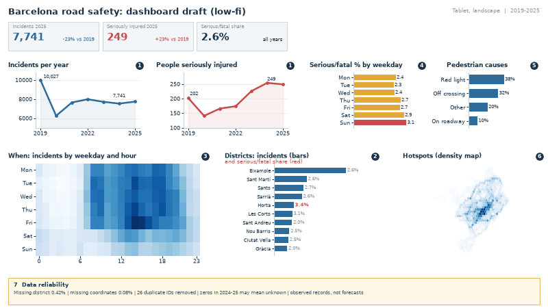

Barcelona road accidents: the dashboard draft

Low-fi prototype for the mayor's tablet (landscape). Numbered badges 1-7 match the seven questions of the audience task. Values come from the 54,928 unique incidents of 2019-2025.
1) Charts and encoding
Chart 1 (Q1): Two small line charts
Goal: show the trend of incident volume and of serious harm side by side, to see that fewer incidents do not mean safer outcomes.
Decisions: one row per unique incident ID (26 duplicates removed); incidents counted per year, seriously injured people summed per year; integer precision. Two panels with independent y axes (not one dual axis) so the opposite trends are not distorted. Only the first, middle and last year are labelled; start and end values are written on the line.
| Field | Encoding | Function | Relation with perception theory | Legend |
|---|---|---|---|---|
| nk_any (year) | Position on x, ordered | Show order and trend | Position on a common axis is the most accurate channel; line connects ordered points (continuity). | Axis ticks 2019, 2022, 2025 |
| Incidents / seriously injured (count) | Position on y | Compare change over time | Slope is read pre-attentively; direct labels avoid lookup. | Panel titles + end labels |
| Measure | Hue: blue = volume, red = serious harm | Tell the two measures apart | Hue is selective (categorical) and consistent across the dashboard. | Panel title |
Chart 2 (Q2): Sorted horizontal bars of districts
Goal: compare districts by volume and by serious or fatal share, to decide where to act first.
Decisions: ten districts (232 incidents without district are left out and noted); bars sorted by count; share shown to one decimal. The share is a text label because it is a rate and cannot share the count axis. The full choropleth from Task 1.1 stays as the detailed view; a map shades by area and makes large, empty districts dominate.
| Field | Encoding | Function | Relation with perception theory | Legend |
|---|---|---|---|---|
| nom_districte | Vertical position, sorted by value | Identify and rank | Sorting makes the ranking readable at a glance. | Labels on the axis |
| Incidents (count) | Bar length (blue) | Compare volume | Length on a common baseline: highest accuracy (Cleveland and McGill). | Chart title |
| Serious/fatal share (%) | Red numeric label; maximum in bold | Spot the most severe district | Red against grey is pre-attentive; only the outlier (Horta-Guinardo, 3.4%) is emphasised. | Subtitle in red |
Chart 3 (Q3): Weekday-by-hour heatmap
Goal: reveal when incidents concentrate, to time enforcement and campaigns.
Decisions: counts of unique incidents per weekday (Monday to Sunday, natural order) and hour 0-23; no binning beyond the hour, so the afternoon peak (Friday 14:00) stays visible.
| Field | Encoding | Function | Relation with perception theory | Legend |
|---|---|---|---|---|
| dia_semana | Row position | Group by weekday | Ordered rows keep the weekly cycle. | Row labels |
| hora_dia | Column position | Group by hour | Regular grid; similarity forms visible bands (weekday rush, weekend night). | Ticks 0, 6, 12, 18, 23 |
| Incidents (count) | Lightness of a single blue hue | Find peaks | Lightness is ordered; less precise than position, but enough for patterns, not exact values. | Colour bar in the final version |
Chart 4 (Q4): Weekday severity bars
Goal: separate the most frequent days from the most dangerous ones.
Decisions: share of incidents with serious or fatal outcome per weekday (2.3% to 3.1%), one decimal. A rate, not a count, so busy days do not look worse by volume alone. The axis starts at zero to avoid exaggerating small differences.
| Field | Encoding | Function | Relation with perception theory | Legend |
|---|---|---|---|---|
| dia_semana | Vertical position, calendar order | Identify the day | Natural order is easier than sorting by value here. | Labels |
| Serious/fatal share (%) | Bar length from zero | Compare severity | Length on a common baseline. | Value labels |
| Highest day | Hue: red for Sunday, amber for the rest | Highlight | Colour contrast guides the eye (figure-ground). | Title |
Chart 5 (Q5): Pedestrian-cause bars
Goal: show which pedestrian behaviours are behind pedestrian-related incidents.
Decisions: we use the pedestrian-cause field (17% of incidents are pedestrian-caused). "Unknown" is excluded from the shares and noted; the four known causes are shown, rounded to whole percent.
| Field | Encoding | Function | Relation with perception theory | Legend |
|---|---|---|---|---|
| descripcio_causa_vianant | Vertical position, sorted | Identify the cause | Short English labels reduce reading effort. | Labels |
| Share of pedestrian-caused incidents | Bar length (blue) | Compare composition | Length is more accurate than the angle of a pie. | Value labels |
Chart 6 (Q6): Density map of hotspots
Goal: locate concentrations of incidents inside the city.
Decisions: hexagonal binning of longitude and latitude instead of 55,000 points, to avoid overplotting; 0.08% of rows without coordinates are left out; the aspect ratio corrects for latitude.
| Field | Encoding | Function | Relation with perception theory | Legend |
|---|---|---|---|---|
| longitud, latitud | Position on a map (x, y) | Locate | Spatial position is intuitive for a city policy maker. | None (outline of the city) |
| Incidents per hexagon | Lightness of blue | Find hotspots | Same blue as the other volume charts (similarity). | Colour bar in the final version |
Chart 7 (Q7): Reliability strip
Goal: let the mayor know how far the figures can be trusted.
Decisions: a text strip, not a chart: missing district 0.42%, missing coordinates 0.08%, 26 duplicate IDs removed, zeros in 2024-2025 that may mean unknown, and the fact that all values are observed records, not forecasts. Amber background marks it as a caution.
Use of colour
Colour has one meaning per hue. Blue is volume (incidents), in line and bar charts and as a single sequential scale in the heatmap and map. Red is serious harm or alert: the injury line, the highest district share and the highest weekday. Amber is the secondary severity rate and the caution strip. Grey is context (axes, grids, other districts). Hue is never the only cue: values are labelled, and blue and red differ in lightness, so the design also works for colour-blind readers.
2) Layout and Gestalt laws
| Gestalt principle | How is it applied in the dashboard? | Why? |
|---|---|---|
| Proximity | Key figures at the top; the three "trend and severity" charts in one row; the three "where and when" charts in the next row. | Related questions are read together and unrelated ones are separated by white space. |
| Similarity | Same hue for the same measure (blue volume, red harm); same badge style and title style on every chart. | The mayor learns the code once and applies it to every panel. |
| Common region | Key-figure cards and the amber reliability strip are enclosed in boxes. | Separates summary and caveats from the charts. |
| Continuity and alignment | Charts sit on a grid with left-aligned titles; the two trend lines share the same height and x range. | The eye moves left to right, top to bottom, in the order of the questions. |
| Figure-ground | Muted blues and grey as background; red only on the few items that matter. | Draws attention to the key warning (serious injuries up 23%) within seconds. |
3) Draft and the questions it answers
| Question | How this question will be answered with the dashboard? |
|---|---|
| 01 How are incidents and serious injuries evolving? | The two lines show 10,027 to 7,741 incidents (-23%) next to 202 to 249 seriously injured (+23%). The key-figure cards repeat the 2025 values. |
| 02 Which districts have the most accidents and the highest serious share? | The sorted bars put Eixample first (15,080 incidents); the red labels show Horta-Guinardo as the highest share (3.4%). |
| 03 When do accidents concentrate? | The heatmap shows dark cells on weekday afternoons (Friday around 14:00) and light cells at night. |
| 04 Which weekdays are the most severe? | The weekday bars show Sunday as the most severe (3.1%) and Tuesday as the least (2.3%), even though weekdays have more incidents. |
| 05 Which pedestrian behaviours are behind pedestrian-caused accidents? | The pedestrian-cause bars show red-light disobedience (38%) and crossing outside crossings (32%) as the main known causes. |
| 06 Where are the hotspots? | The density map shows the concentration in the central districts and along the main avenues. |
| 07 How reliable are the figures? | The amber strip lists missing values, removed duplicates, ambiguous zeros and the observed-data status. |